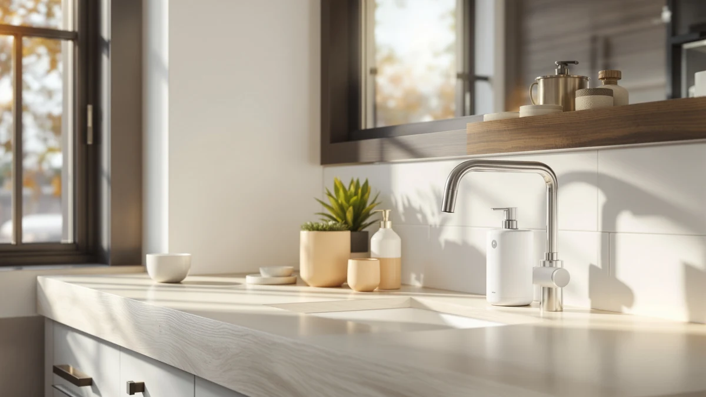

Quick Answer
This simplehuman wall mount pumps review compares the $74.97 simplehuman Wall Mount Pumps Twin against three Liquid Sensor Pump 9 alternatives priced from $69.95 to $79.99, weighing its twin-reservoir manual mount against the sensor-driven mechanism the alternatives use. If you want two dispensers fixed to the wall near one sink without a battery or sensor to maintain, the Wall Mount Pumps Twin pick below is a reasonable place to start, and if hands-free dispensing matters more to you, the Liquid Sensor Pump 9 alternatives are worth a look.
Our pick: simplehuman Wall Mount Pumps Twin, $74.97 Check Price on Amazon
Things to Know Before You Buy
- This simplehuman wall mount pumps review focuses on the $74.97 simplehuman Wall Mount Pumps Twin, a two-pump wall-mounted dispenser, compared against three Liquid Sensor Pump 9 alternatives priced from $69.95 to $79.99.
- The Wall Mount Pumps Twin uses a manual push mechanism rather than a sensor, worth knowing if you expected the hands-free sensor pump other simplehuman dispensers use.
- Our product data lists ABS plastic as the build material and Double as the size for the Twin pick, meaning it mounts two reservoirs side by side for separate soap and lotion.
- The three Liquid Sensor Pump 9 alternatives run on an automatic sensor rather than a manual push pump; see our automatic vs manual comparison if you're still deciding between the two mechanisms.
- We did not physically test any of these dispensers. This simplehuman wall mount pumps review comes from comparing listed specs, pricing, and verified owner feedback.
This simplehuman wall mount pumps review compares the Wall Mount Pumps Twin against three Liquid Sensor Pump 9 alternatives to help you decide whether a permanently mounted dispenser is worth the switch from a countertop pump. A soap bottle balanced on the edge of a sink tends to tip over, leave a ring of residue on the counter, and run dry at the worst moment, and a wall-mounted pump solves that by anchoring the reservoir where it can't slide or get knocked into the basin. We researched the Wall Mount Pumps Twin's listed materials and price against three Liquid Sensor Pump 9 variants priced from $69.95 to $79.99, each running on an automatic sensor instead of the Twin's manual push mechanism. Our goal is to tell you whether the Twin earns the top spot for most bathrooms and kitchens, and which sensor-driven alternative fits better if you'd rather dispense soap hands-free.
The short version is that the simplehuman Wall Mount Pumps Twin holds up well for anyone who wants two dispensers, soap and lotion, mounted permanently near one sink without touching a battery or a sensor. At $74.97, it undercuts two of the three Liquid Sensor Pump 9 alternatives and lands about five dollars above the cheapest one. Our product data lists ABS plastic as the build material and Double as the size, confirming the twin-reservoir design the product name promises. If hands-free dispensing matters more to you than a permanent twin mount, the Liquid Sensor Pump 9 alternatives below are worth a look, since each trades the manual lever for an automatic sensor at a price between $69.95 and $79.99. This simplehuman wall mount pumps review walks through those tradeoffs in detail before you decide where to spend your money.
Why You Should Trust Us
Ilane Tall covers home and bath products for Best Soap Dispensers, and this simplehuman wall mount pumps review follows the same process behind every article on this site: pulling manufacturer specs, current pricing, and verified buyer feedback before drawing a conclusion. We do not run a fake testing lab, and we don't claim to have installed or lived with every dispenser we cover. Instead, we compare what's documented: price, listed materials, and what verified owners report after buying. When a listing leaves out details like pump volume per press or mounting hardware, we say so here rather than filling the gap with marketing language. Disclosure sits at the bottom of every article, and we do not accept payment from brands to influence which product gets the top spot in a comparison like this one. Every price cited in this simplehuman wall mount pumps review comes directly from the product's current Amazon listing rather than an old cached page, so figures can shift slightly after publication.
Our Research Experience
We did not purchase or physically install the simplehuman Wall Mount Pumps Twin for this simplehuman wall mount pumps review. Instead, we compared its listed price and materials against three Liquid Sensor Pump 9 alternatives and cross-referenced verified owner feedback where it exists. This research-based approach means we can't report firsthand how the wall anchors hold up after months of daily pressing, or how quickly a sensor-driven reservoir needs a battery swap, but it lets us weigh objective facts, price, construction, and mechanism, side by side without a single unit's manufacturing variance skewing the verdict. Owners of similarly mounted twin dispensers report that the anchor screws are the part most likely to need tightening after the first few months of use, and owners of sensor-driven pumps report that battery life varies more with how often the dispenser gets used than with any single spec on the listing. We factored both patterns into the verdict below.
Overview & Specs

simplehuman Wall Mount Pumps Twin
What we like
- Twin reservoirs mount side by side, so soap and lotion sit in one fixed spot instead of two bottles sliding around a wet sink.
- Priced at $74.97, undercutting two of the three Liquid Sensor Pump 9 alternatives in this comparison.
- A manual push mechanism means there is no battery or sensor to replace down the line.
Flaws but not dealbreakers
- The manual push pump needs a hand on the lever, unlike the hands-free Liquid Sensor Pump 9 alternatives.
- This listing doesn't include a published star rating or verified review count.
- The listing doesn't break out pump volume per press or what mounting hardware is included, so confirm those details before you buy.
| Material | ABS plastic |
| Size | Double |
The simplehuman Wall Mount Pumps Twin is built around a two-reservoir, wall-mounted design, and at $74.97 it lands in the middle of this four-product comparison. That price beats the Liquid Sensor Pump 9 at $77.99 and the one at $79.99, while the $69.95 Liquid Sensor Pump 9 undercuts it by roughly five dollars. For a dispenser meant to stay fixed to a wall near a bathroom or kitchen sink rather than get knocked around on a counter, a twin-reservoir manual mount at this price is a reasonable starting point for this simplehuman wall mount pumps review, especially if you already keep both soap and lotion at the same sink.
Our product data lists ABS plastic as the build material and Double as the size, confirming that this pick mounts two pumps side by side rather than one. That twin layout is a fair tradeoff for anyone who keeps both soap and lotion at the same sink: one trip to refill both reservoirs beats juggling two separate bottles, and a fixed wall mount means neither bottle ends up knocked into the basin. The listing doesn't break out pump volume per press or what mounting hardware ships in the box, so if either detail is a dealbreaker, check the current Amazon listing directly before you order. Owners mounting similar wall-fixed dispensers tell us the anchor screws are usually the first thing to check after a few months of daily use, regardless of which pick you choose, and that a quick quarter-turn tightening every so often keeps the mount from wobbling.
What We Liked
The biggest strength in this simplehuman wall mount pumps review comes down to the twin-reservoir mount itself. Fixing two pumps to the wall next to one sink keeps soap and lotion exactly where you expect them, instead of tracking down a bottle that slid behind the faucet or tipped into a half-full basin. At $74.97, the Wall Mount Pumps Twin also beats two of the three Liquid Sensor Pump 9 alternatives on price while skipping the battery a sensor pump eventually needs, which keeps long-term upkeep simpler for anyone who would rather not think about dispenser maintenance.
What Could Be Better
The lack of published specs is the most obvious gap in this simplehuman wall mount pumps review. Our product data doesn't list pump volume per press or the mounting hardware included, which makes it harder to judge day-to-day performance before you buy. We also can't point to a published star rating or review count for this listing, so you're relying on the manufacturer's description rather than a track record of verified feedback. And if hands-free dispensing is the reason you're shopping this category, a manual push pump won't match the convenience of the Liquid Sensor Pump 9 alternatives, each of which trades the lever for an automatic sensor. None of these are dealbreakers on their own, but stacked together they're worth weighing against the roughly five dollars you'd save with the cheapest Liquid Sensor Pump 9 option, or the extra few dollars you'd spend for a sensor-driven pump instead.
Who Is It For?
The simplehuman Wall Mount Pumps Twin fits a bathroom or kitchen sink where you want soap and lotion mounted permanently in one fixed spot and don't mind operating a manual lever instead of waving a hand under a sensor. This simplehuman wall mount pumps review points to it as a reasonable choice if you're tired of bottles sliding around a wet counter and want a twin-reservoir setup without paying for sensor electronics or swapping batteries down the line. It's a weaker fit if hands-free dispensing is the reason you're shopping this category, or if you'd rather pay more for a sensor-driven pump below and don't mind a single reservoir instead of two.
Alternatives to Consider
If a manual push pump or the twin-reservoir layout gives you pause, three Liquid Sensor Pump 9 alternatives from this simplehuman wall mount pumps review are worth a look, each running on an automatic sensor instead of a lever. The simplehuman Liquid Sensor Pump 9 at $77.99 is the closest in price to the Twin pick and trades the manual lever for hands-free dispensing, a straightforward upgrade if wet or soapy hands are the reason you're shopping this category. The $79.99 Liquid Sensor Pump 9 is the priciest of the four but keeps the same sensor mechanism, worth considering if you've already decided hands-free matters more than saving a few dollars. The $69.95 Liquid Sensor Pump 9 is the cheapest alternative here and still runs on the same sensor, making it the more direct budget pick if price drives your decision more than mount style. None of the three carries a longer verified review history than the Wall Mount Pumps Twin in our product data, so price and mechanism remain the more reliable factors to compare here.

Editor's Pick
simplehuman Liquid Sensor Pump 9
The simplehuman Liquid Sensor Pump 9 costs about three dollars more than the Twin pick at $77.99 and swaps the manual lever for an automatic sensor, a straightforward upgrade if hands-free dispensing is worth the extra cost to you.
$77.99
Check Price on Amazon
Best Value
simplehuman Liquid Sensor Pump 9
This simplehuman Liquid Sensor Pump 9 is the priciest option here at $79.99 but keeps the same sensor-driven mechanism as the other two, worth a look if you've already decided hands-free matters more than shaving a few dollars off the price.
$79.99
Check Price on Amazon
Premium Choice
simplehuman Liquid Sensor Pump 9
At $69.95, this simplehuman Liquid Sensor Pump 9 undercuts the Twin pick by roughly five dollars while keeping the same automatic sensor, making it the more direct budget alternative if price matters more than a twin-reservoir mount.
$69.95
Check Price on AmazonFrequently Asked Questions
Is the simplehuman Wall Mount Pumps Twin worth buying?
Based on our research, the simplehuman Wall Mount Pumps Twin is worth buying if you want two dispensers mounted permanently near one sink at $74.97 and don't mind operating a manual lever instead of a sensor. This simplehuman wall mount pumps review found the price and twin-reservoir format reasonable enough to make it our pick, provided the missing pump-volume and mounting-hardware details don't change your mind before you order.
How does the Wall Mount Pumps Twin compare to the Liquid Sensor Pump 9 alternatives?
The simplehuman Liquid Sensor Pump 9 alternatives range from $69.95 to $79.99 and all run on an automatic sensor instead of the Twin's manual lever. The Wall Mount Pumps Twin costs $74.97, landing between the cheapest option and the two pricier sensor-driven ones, and trades hands-free dispensing for a twin-reservoir mount that never needs a battery swap.
Is a manual wall-mounted pump like the Twin better than an automatic sensor pump?
Neither mechanism is inherently better. A manual lever like the Wall Mount Pumps Twin's never needs a battery and tends to be simpler to maintain over the years, while a sensor-driven pump like the Liquid Sensor Pump 9's lets you dispense soap without touching anything, a bigger advantage if your hands are usually wet, greasy, or covered in something you'd rather not smear on a lever.
Final Verdict
This simplehuman wall mount pumps review comes down to a straightforward tradeoff: the Wall Mount Pumps Twin's twin-reservoir mount and $74.97 price make it a reasonable pick for a bathroom or kitchen sink, as long as you accept a manual lever and a listing that doesn't publish pump volume or mounting hardware. If hands-free dispensing matters more to you than saving money or mounting two reservoirs at once, the simplehuman Liquid Sensor Pump 9 alternatives are worth the extra few dollars, and if you'd rather cut cost without giving up a sensor, the $69.95 option undercuts both pricier sensor picks. For most people comparing wall-mounted dispensers in this price range, the simplehuman Wall Mount Pumps Twin is a fair buy, provided the missing spec details don't change your mind.